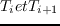
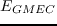

Next: Superfamily/SCOP Up: Les méthodes pratiques Previous: Les protocoles Replica Exchange
Après avoir convertit nos matrices au format wcsp grâce à un script dédié,nous pouvons utiliser toulbar2. Le protocole toulbar2 de recherche du GMEC est le suivant: Le binaire toulbar2 de version 0.9.7.0 est lancé avec les options -l=3 -m -d: -s, ce qui correspond au paramétrage conseillé dans la documentation CDP reftoulbar1,reftoulbar2. Si au bout de vingt-quatre heures l'exécution est terminée, le protocole est achevé. Sinon le programme est arrêté et une seconde version (la 0.9.6.0) est lancé avec les options -l=1 -dee=1 -m -d: -s. Au bout de vingt-quatre heures si le programme n'est pas terminée, il est arrêté. La dernière séquence/conformation imprimer en sortie est collectée. Le choix de la seconde version et du paramétrage fait suite à une discussion avec monsieur Seydou Traoré.
Toulbar2 est également capable de fournir la listes des séquences/conformations dont l'énergie est comprise entre celle du GMEC,  et une autre  donnée en paramètre. Pour cette fonctionnalité nous utilisons le paramétrage: -d: -a -s -ub= .